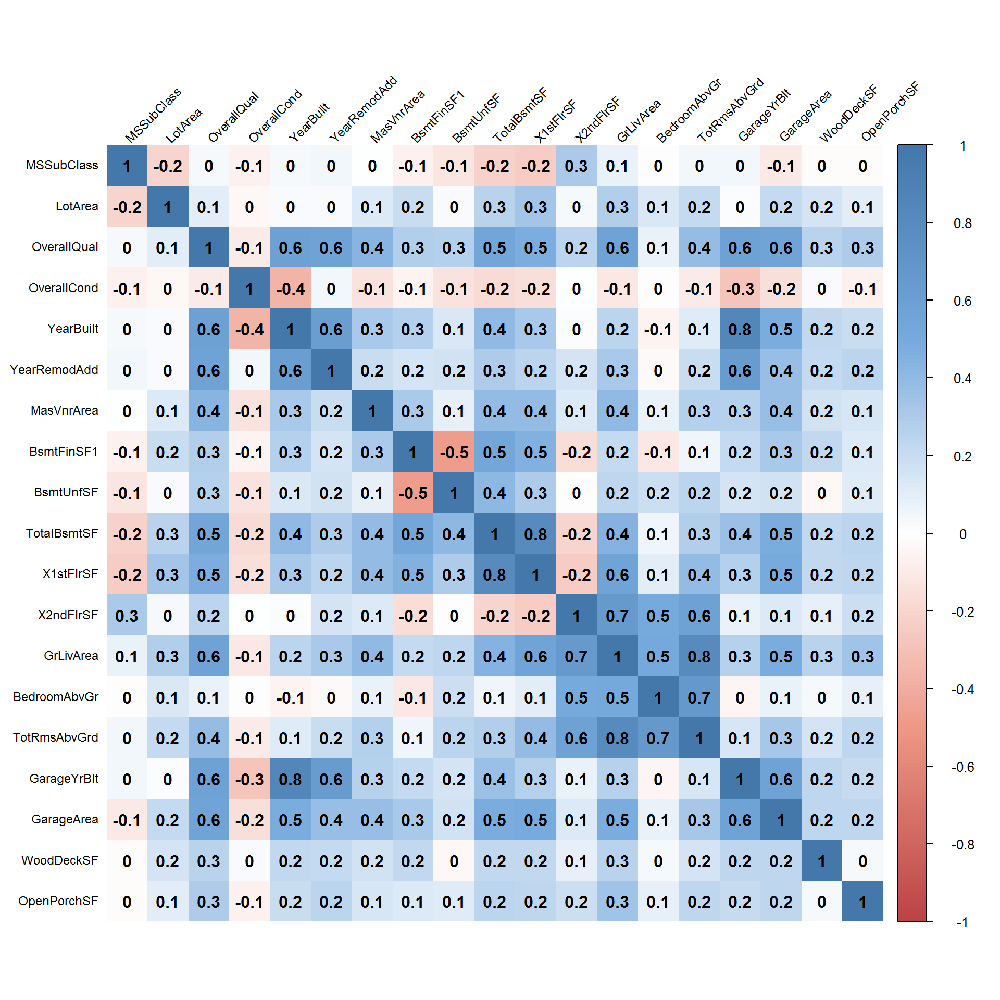

Problem
The problem we are trying to solve here is to build models to predict house prices, given the Ames Housing dataset, with high degree of predictive accuracy. The problem does not call for specific algorithms or techniques to be used. Just know that machine learning is a street brawl.
Significance
The goal of the problem was to utilize any and all machine learning tools or time series forecasting techniques to make the best possible prediction of house prices. This is an interesting problem because most people will eventually buy/sell a home. This problem allows us, as data scientists, to learn more about the housing market and helps with making more informed decisions.
This project encouraged getting our hands dirty to clean, transform, and engineer features that enabled better predictions. This problem also necessitated learning popular algorithms and tools. The use of Kaggle as a platform for data science competition helped motivate us to keep improving.
Data
Description
The Ames Housing dataset was retrieved from https://www.kaggle.com/c/house-prices-advanced-regression-techniques/data. The dataset represents residential properties in Ames, Iowa from 2006 to 2010. There is a train and a test file. The train file has 1460 observations and the test file has 1459 observations. Both datasets contain 79 explanatory variables composed of 46 categorical and 33 continuous variables that describe house features such as neighborhood, square footage, number of full bathrooms, and many more. The train file contains a response variable column, SalePrice, which is what we will predict in the test set. There is also a unique ID for each house sold, but were not used in fitting the models.
Exploratory Data Analysis
Below is a historgram of the SalePrice. Notice that the SalePrice is heavily skewed to the right.
A log transformation was made to normalize the variable. This would allow algorithms such as linear regression, which rely on the assumption of linear relationships, to make better predictions.
Next we examined some boxplots of certain variables against SalePrice. These help to confirm our understanding of what may affect a home’s sale price.
It appears that certain neighborhoods sell for more than others. The distribution of prices make sense here as there should be varying prices with certain neighborhoods clearly valued higher.
Below are several more boxplots that indicate homes with more full bathrooms, finished garages, and central airconditioning tend to yield higher sale prices which is common sense.
Lastly, we can take a look at some numeric variables and their correlations to one another. Sometimes highly correlated variables may need to be removed. 
The above correlation matrix shows some variables that are highly correlated such as GrLivArea and TotRmsAbvGrd at 0.8 and GarageYrBlt and YearBuilt at 0.8. These variables were not be removed and were kept in the dataset as some of the models are fairly robust and correlated variables will not hinder predictive performance.
Data Preprocessing
The data preprocessing step proved to be the most crucial in this project. The train and test datasets were combined to keep the level of factors equal between the two sets so problems were not run into when predicting with unseen factor levels.
In order to reduce the dimensionality of the dataset, the nearZeroVar() function from the caret package was used to remove variables that either have very few unique values. The purpose of removing these variables is because they do not add any additional information.
All numeric variables that had a skewness of over 0.75 were transformed using the log function. The categorical variables were one hot encoded into binary variables which means that each factor level was given it’s own variable with values 0 or 1 representing no presence or presence of that feature.
Certain variables contained many missing values. Any variables with over 20% missing were removed from the dataset. The remaining missing values were imputed using the mice package.
Type of Models
The following are five models developed to predict house prices. These models were chosen because they showcase varying complexity and also have proven to perform well on many Kaggle problems.
LASSO
The LASSO, also known as Least Absolute Shrinkage and Selection Operator), is a regression model that does variable selection and regularization. The LASSO model uses a parameter that penalizes fitting too many variables. It allows the shrinkage of variable coefficients to 0, which essentially results in those variables having no effect in the model, thereby reducing dimensionality. Since there are quite a few explanatory variables, reducing the number of variables may increase interpretability and prediction accuracy.Random Forest
A more advanced model, the random forest uses multiple decision trees and gives the mean prediction of each tree. This is somewhat of a black box approach as the random forest mechanism is not very clear as it will give model results, but lack information on coefficients which is something we normally get from an output of a regression model. However, the random forest model is a great general purpose algorithm that has potential to make quite accurate predictions. Random forests can be quite robusts against outliers and do not require assumptions of normality.GBM Gradient boosting models are one of the most popular algorithms on Kaggle. A variant of GBMs known as the XGBoost has been a clear favorite for many recent competitions. The algorithm works well right out of the box. It is a type of ensemble model, like the random forest, where multiple decision trees are used and optimized over some cost function. The popularity and ability to score well in competition are reasons enough to use this type of model for house price prediction problem.
Neural Networks
Neural nets have recently been popularized in the media especially for their use in deep learning. Neural networks mimic the function of a human brain. There are multiple layers containing neurons. Inputs into each layer become the output for the subsequent layer until there are no additional layers. Neural networks are useful in this problem because they can take complex datasets and find patterns. This model can be useful when dealing with mixed variable type datasets.Ensemble Model/Model Averaging
The last type of model used was the ensemble model, specifically model averaging. Several models are created that perform relaively well on the problem and the predictions are averaged. In this case, all the models above were used to create an average prediction. The reason for using this model was that the recent Kaggle winners used ensemble models. It is not surprising that most winning submissions are ensembles because one can leverage the prediction power of several different models to obtain the highest prediction accuracy.
Literature
The following five examples refer to the type of models used in this report that have been applied to similar cases.
LASSO
In Taiwan, head and neck cancers are one of the leading causes of mortality. One of the common treatments is radiotherapy which often results in xerostomia which is severe dryness of the mouth. Several researchers analyzed questionnaires from 206 patients before, during and after radiotherapy. The reseachers analyzed the variables 3 and 12 months post radiotherapy. The LASSO model was used to rank and select strongly correlated prognostic factors based on the AUC. The LASSO selected eight factors 3 months after radiotherapy and nine factors 12 months after radiotherapy. The LASSO model had an AUC score of 0.86 and 0.87 for the post 3 and 12 months after radiotherapy respectively. (Lee, Chao, Ting, Chang, Huang, Wu, & Leung, 2014)
Random Forest
Flavonoids are an important research objective when it comes to wine because they affect the sensory quality of fruits and vegetables. When berries age and ripen the skin texture changes and affects the sensory quality of the grapes. Measuring flavinoids is time consuming so a group of researchers employed machine learning algorithms to try and accurately predict skin flavonoid content. They used several ensemble methods including random forest. They took texture properties and flavonoid content measured in 22 wine grapes. They were able to obtain high accuracy with \(R^2\) of 0.836 and RMSE of 0.729 on the test set. The result is a greater exposure and appreciation for machine learning in the area of chemometrics (Brillante, Gaiotti, Lovat, Vincenzi, Giacosa, Torchio, Segade, Rolle, & Tomasi, 2015).
GBM
An interesting application of GBMs is for auto insurance loss cost prediction. GLMs are generally an accepted framework for insurance pricing models, however the exploration into GBMs, as it is a very robust method, was attractive to a group of auto insurance researchers. The performance of the GBM was compared with the GLM by calculating a ratio of the rate the insurance company would charge based on the GBM model to the rate the insurance company would charge based on the GLM model resulting in a GLM-loss ratio. It was found that the GLM loss-ratio increases when the GBM would suggest charger higher rate than GLM which indicates the GBM had higher predictive performance (Guelman, 2012).
Neural Networks
Neural networks have been used to solve all sorts of complex and unique problems. One of those problems is predicting energy consumption and thermal comfort level of a swimming pool. The neural network was trained and optimized in real conditions in order to achieve energy cost savings. Variables such as hour, day, month, humidity, water temperature, room temperature, and supplied flow rate were inputs into the neural network model with outputs being electricity consumption, thermal energy consumption, and thermal comfort (PMV). The results of testing error rate allowed the researchers to determine the optimal hidden layers and epochs which is similar to our use of cross-validation techniques on the neural network later in this report. The use of neural networks here allows for creation of intelligent swimming pool systems (Yuce, Li, Rezgui, Petri, Jayan, & Yang, 2014).
Ensemble Model/Model Averaging
A study of the Pacific Northwest region runoff shows that multi-model ensemble outperforms single model predictions. The ensemble model was used to predict projected seasonal runoff extremes compared to historical simulations. Several models were created and combined through the use of Bayesian model averaging and then made to predict the runoff extremes for each season. The results were compared with the observed historical simulation on a map grid. The ensemble models predicted that there would be an increase in extreme runoff in the future in most of the Pacific Northwest regions (Najafi & Moradkhani, 2015).
Formulation
After processing the dataset, the training was separated into training and validation sets using a 75/25 split. In this way, models were fit on the training and evaluated or tuned on validation.
The models were implemented using the caret and h2o packages. The caret package was used primarily for parameter tuning. The package allows grid search where you specify a data frame of parameter values. It also works with hundreds of popular machine learning algorithms. The models were fit using repeated 5-fold cross-validation. An example of my usage is shown below.
fitControl <- trainControl(method="repeatedcv",
number=5,
repeats=5,
verboseIter=FALSE)
set.seed(123) # for reproducibility
lasso_mod <- train(x=x_train,y=y_train,
method="glmnet",
metric="RMSE",
maximize=FALSE,
trControl=fitControl,
tuneGrid=expand.grid(alpha=1, # Lasso regression
lambda=c(1,0.1,0.05,0.01,seq(0.009,0.001,-0.001),
0.00075,0.0005,0.0001)))Models can take fairly long to run even with a dataset of this size (2919 total observations and 80+ variables). I discovered the h2o package which allows R to run in-memory, in distributed fashion. This sped up many models that I had already built by at least 20x running on my local machine. Once you load the h2o package and initiate the cluster, you can fit a model like a neural network very fast.
dl_fit <- h2o.deeplearning(x = x,
y = z,
training_frame = train_h2o,
model_id = "dl_fit2",
# validation_frame = valid_h2o, # only used if stopping_rounds > 0
epochs = 20,
hidden= c(10,10),
stopping_rounds = 0, # disable early stopping
seed = 1)
dl_perf <- h2o.performance(model = dl_fit2, newdata = valid_h2o)All the models were iterated over several variations of parameters and data preprocessing situations in order to obtain the best possible predictions.
Model Performance
Each model was compared using the Log RMSE on a validation set. The Kaggle public score shows the results on the public test set. As of writing, the competition has not ended, so there are no results on the private heldout test set.
| Model | Cross Validation Log RMSE | Kaggle Public Log RMSE |
|---|---|---|
| LASSO | 0.12783 | 0.12390 |
| Random Forest | 0.12567 | 0.14043 |
| GBM | 0.12382 | 0.13733 |
| Neural Network | 0.14334 | 0.16168 |
| Ensemble (GLM+GBM) | 0.10757 | 0.12523 |
The model that performed the best was the LASSO model. It did not have the best cross validation score, but the best public leaderboard score on Kaggle. The LASSO model is more easily interpretable model than the others since it reduces the dimensionality of the dataset by shrinking variables to 0. It allows for a much more manageable set of variables to work with. It makes sense that the LASSO model performed well because many variable appeared to have some linear relationship with the reponse variable, SalePrice.
The next best model was the ensemble model. By leveraging multiple models, the ensemble model was able to obtain the pretty good prediction accuracy. However, brute force and adding multiple models and averaging their predictions did not prove to be the best model. Surprisingly, the Neural Network model did not perform well at all. Even with parameter tuning, it never was able to beat any of the other models.
Limitations
The Ensemble model has some clear limitations. It is not at all easily interpretable despite yielding high prediction accuracy. The Ensemble model requires brute forcing multiple models which can make things complicated fast if you are not careful. It also heavily relies on the models that go into it.
The Random Forest, GBM, and Neural Network are fairly robust models that can work on a variety of classification and regression problems. Much of the limitaions of these models relies on the tuning of the parameters and the inputs to the model. The same goes for the LASSO model where one can tune the lambda values. The LASSO is more reliant on the assumption that the explanatory variables are linearly related to the response.
Future Work
Some future considerations for this problem may be to perform more feature engineering. There are likely other variables that can provide more information. The models can be further developed through more hyper-parameterization and perhaps running them in a distributed computing environment.
The goal in developing these models is to be able to better understand and to apply them to other real world datasets. I am interested into taking some of these models to more complex problems like image classification and building some interactive applications around these models. My hope is to be able to showcase this project and other future similar projects to employers/clients. This problem has also inspired me to compete in other Kaggle competitions using models developed here.
Learning
This project was fairly complex in terms of dealing with many explanatory variables. By no means was this big data, but higher dimension datasets can be difficult to deal with if not prepared appropriately to be fed into machine learning algorithms.
Some of the major takeaways from this project are that there are packages that help automate the modeling process like the caret package. This package allows you to utilize grid search and cross validation to select optimal model parameters. This was especially helpful when fine tuning models to make better predictions.
Another nice package/engine is the h2o package. It allows you to run machine learning algorithms in-memory in a distributed fashion. So for algorithms like neural networks or random forests, which can take a long time to train, would literally take a few seconds. This allows more iterations and experimentation.
Model complexity does not necessarily lead to better predictions. As mentioned earlier, simpler models like the LASSO, could produce better results than black box methods like neural networks, which did not seem to perform well in this competition.
Lastly, because the dataset contained many variables, it really challenged my skills in R in terms of manipulating data and writing functions more effectively and efficiently.
References
Brillante, Luca, Federica Gaiotti, Lorenzo Lovat, Simone Vincenzi, Simone Giacosa, Fabrizio Torchio, Susana Río Segade, Luca Rolle, & Diego Tomasi. “Investigating the Use of Gradient Boosting Machine, Random Forest and Their Ensemble to Predict Skin Flavonoid Content from Berry Physical–mechanical Characteristics in Wine Grapes.” Computers and Electronics in Agriculture 117 (2015): 186-93. Web.
Guelman, L. (2012). Gradient boosting trees for auto insurance loss cost modeling and prediction. Expert Systems with Applications, 39(3), 3659-3667. doi:10.1016/j.eswa.2011.09.058
Lee, T.-F., Chao, P.-J., Ting, H.-M., Chang, L., Huang, Y.-J., Wu, J.-M., … Leung, S. W. (2014). Using Multivariate Regression Model with Least Absolute Shrinkage and Selection Operator (LASSO) to Predict the Incidence of Xerostomia after Intensity-Modulated Radiotherapy for Head and Neck Cancer. PLoS ONE, 9(2), e89700. http://doi.org/10.1371/journal.pone.0089700
Najafi, M. R., & Moradkhani, H. (2015). Multi-model ensemble analysis of runoff extremes for climate change impact assessments. Journal of Hydrology, 525, 352-361. doi:10.1016/j.jhydrol.2015.03.045
Yuce, B., Li, H., Rezgui, Y., Petri, I., Jayan, B., & Yang, C. (2014). Utilizing artificial neural network to predict energy consumption and thermal comfort level: An indoor swimming pool case study. Energy and Buildings, 80, 45-56. doi:10.1016/j.enbuild.2014.04.052